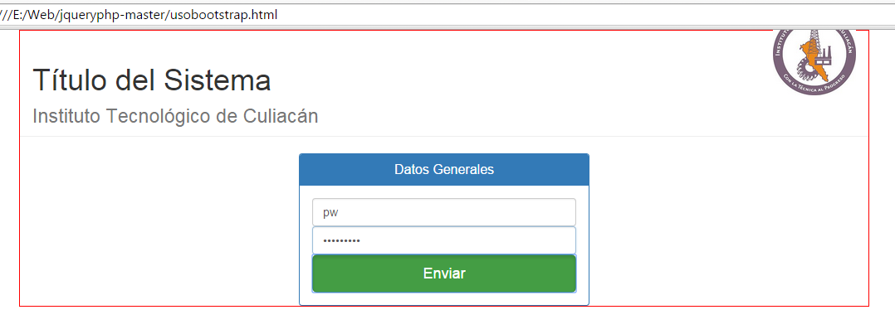

Ing. Tecnologias de la Información y Comunicaciones
6to. Semestre
Primer actividad de HTLM
En esta pagina solamente hicimos la estructura basica de html.
Esta contenia los diferendes niveles de las etiquetas de titulos y subtitulos, que va desd "H1" hasta el "H6", despues se muestran las listas ordenadas y desordenadas y con sus respectivas sub listas. colocamos una imagen con la etiqueta "img" y un txto con link con la etiqueta "a". despues solo colocamos texto.
Segunda actividad de HTLM
La pagina que se muestra a continuacion es una pagina que elaboramos con puro texto, habia tanto texto que la pagina scrolleaba hacia abajo, por lo tanto era necesario bajar la pagina.
en esta actividad utilizamos etiquetas "a" para ir de parrafo en parrafo segun era el que escogieramos.
Tercera actividad de HTLM
En este caso solo colocamos algunos elementos, como "inputs" o tambien llamadas cajas de texto, algo de texto y unos "labels", un combobox o en html llamada "selects" y por ultimo dos botones como aun no utilizabamos java script, nada era funcional
Cuarta actividad de HTLM
Quinta actividad de HTLM
Septima actividad de HTLM
En este caso solo colocamos algunos elementos, como "inputs" o tambien llamadas cajas de texto, algo de texto y unos "labels", un combobox o en html llamada "selects" y por ultimo dos botones como aun no utilizabamos java script, nada era funcional
Septima actividad de HTLM
En este caso solo colocamos algunos elementos, como "inputs" o tambien llamadas cajas de texto, algo de texto y unos "labels", un combobox o en html llamada "selects" y por ultimo dos botones como aun no utilizabamos java script, nada era funcional
Primera actividad de CSS
A esta pagina le dimos un poco de estilos al HTML.
con CSS3 le dimos al header un backgorund de color rosa, algunos botones, logramos colocar tres textos en linea con la propiedad inline-block, al igual que acomodamos una imagen dentro del header para que quedara como imgen del encabezado, un footer, y oviamete un titulo.
Segunda actividad de CSS
en esta actividad se coloco un video solamente y se le dio un estilo de box shadow para ponerle sombra.
Uso de bootstrap en CSS
Utilizamos la herramienta de estilos de bootstrap para colocar botones con mejores diseños y colores, al igual qu inputs y paneles con la misma firma de bootstrap, algunas cosas quedan como predeterminadas como el font de la letra.
Cuarta actividad de CSS
En este caso solo colocamos algunos elementos, como "inputs" o tambien llamadas cajas de texto, algo de texto y unos "labels", un combobox o en html llamada "selects" y por ultimo dos botones como aun no utilizabamos java script, nada era funcional
Quinta actividad de CSS
En este caso solo colocamos algunos elementos, como "inputs" o tambien llamadas cajas de texto, algo de texto y unos "labels", un combobox o en html llamada "selects" y por ultimo dos botones como aun no utilizabamos java script, nada era funcional
Primer examen de CSS
En este caso solo colocamos algunos elementos, como "inputs" o tambien llamadas cajas de texto, algo de texto y unos "labels", un combobox o en html llamada "selects" y por ultimo dos botones como aun no utilizabamos java script, nada era funcional
Septima actividad de CSS
En este caso solo colocamos algunos elementos, como "inputs" o tambien llamadas cajas de texto, algo de texto y unos "labels", un combobox o en html llamada "selects" y por ultimo dos botones como aun no utilizabamos java script, nada era funcional
Primer actividad de JS
el primer programa java script que elaboramos fue el conocido hola mundo, en una alerta de java script
Segunda actividad de JS
el el segundo programa de java script elaboramos una aplcacion para darle un nombre y que este me retornara un tipo de data string.
Tercera actividad de JS
en la tercera aplicacion elaboramos una calculadora funcional que multiplicaba, sumaba, dividia y restaba, con interfas grafica utilizando una tabla y varios botones.

Primer pagina con PHP
En el primer y unico ejercicio de PHP que elaboramos, hicimos un sistema para altas, bajas, y consultas, al mimso tiempo utlizando un log-in.